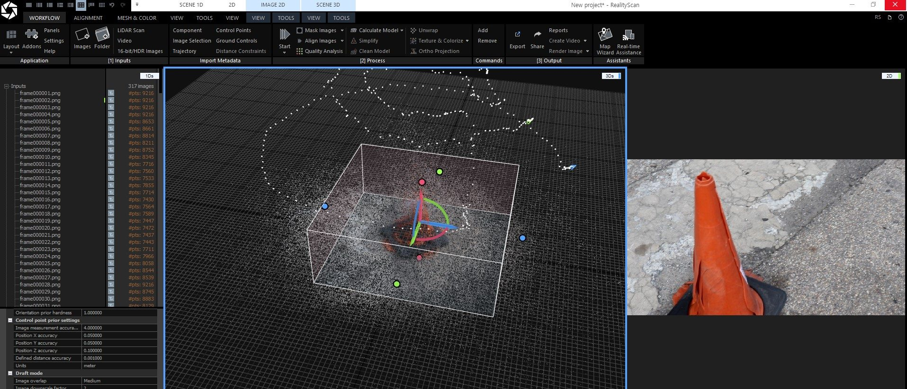

3D 모델링

Patohsi배경 모델러
2024 - 2026
공방처럼 설계하고 쌓아가는 모델링 아티스트입니다. 새로운 기법을 발견하면 문서로 정리하고 작업에 적용합니다.
최신 툴을 기존 디자인에 접목해 새로운 결과물을 만들고, 서로 다른 도구를 하나의 워크플로우로 엮어내는 과정에서 가장 큰 배움을 얻습니다.
WORK PIPELINE
새로운 기법은 문서로 정리하고 작업에 적용합니다. 서로 다른 도구를 하나의 파이프라인으로 연결하는 것이 작업 방식의 중심입니다.
- 01
모듈러 킷 제작
건물 파츠를 모듈러 단위로 나누어 조합 가능한 킷으로 제작합니다. 절차적 도시 파츠의 규격을 설정하고 규격에 맞추어 제작합니다.
- 02
하이-로우 토폴로지 작업
간단한 자료 수집 후 3D 모델링과 컬러링을 진행합니다. 하이폴리를 먼저 제작하고 텍스쳐를 만든 뒤 로우폴리 토폴로지 작업을 합니다.
- 03
UE5 적용과 PBR 최적화
PBR 드로우 콜을 하드하게 관리합니다. 트림 시트가 아닌 텍스쳐 모듈화를 통해 4x4 텍스쳐링 방식으로 작업합니다.
- 04
텍스쳐 파이프라인 간소화
Substance Painter로 제작한 뒤 텍스쳐 패킹으로 관리하고, LOD 관리를 통해 구조적 최적화를 합니다.
- 05
폴리지 제작
필요한 자연물과 절벽 등은 SpeedTree와 Quixel 에셋을 이용해 환경 프랍을 수정하거나 새로 제작합니다.
동양풍 부스 3D 소품 모음
부스 배경을 채우는 소품(책, 기둥, 다리, 등롱, 담장, 가구 등)을 모아 만들었습니다.


캐릭터 의상 3D 모델링
Marvelous Designer와 Blender로 캐릭터 의상을 제작했습니다.


배경 소품 3D 모델링
UE5에 적용하는 것을 기준으로 소품을 제작했습니다.


